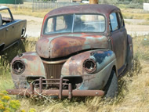
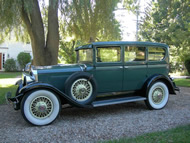

How to Help
Vehicle Donation Program
Home › Vehicle Donation Program
Support Nantucket / LV-112 by Donating a Vehicle

Considering selling or trading in your old or collectible car, truck, or even a boat or camper? Give it new life by donating it to our museum. Our national car donation program is a hassle-free way of putting your used vehicle to work, supporting our efforts to preserve Nantucket Lightship / LV-112 as a floating learning center. Plus, you may be eligible to receive a tax deduction.How it works

We have teamed with Charitable Auto Resources, Inc. (CARS) to accept vehicle donations across the U.S. Once you contact our customer service representative about making the donation, everything will be taken care of, including a receipt for your tax records. Sale proceeds will be donated to the USLM in your name. If the car sells for less than $500, the receipt provided when the car is towed away will serve as your tax receipt. If the car sells for $500 or more, you will receive a 1098-C form for tax purposes. Donating your car to the U.S. Lightship Museum (USLM) is as easy as calling our representative toll-free at 855-500-7433, or visit the website by clicking here.